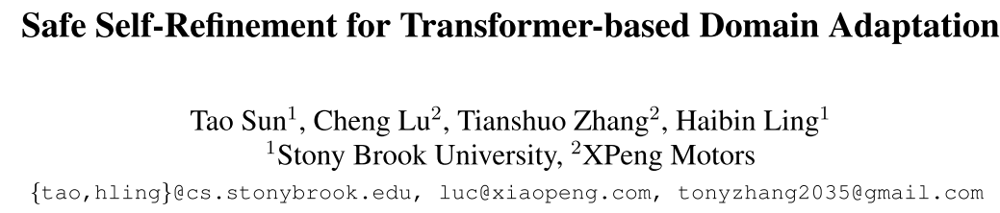
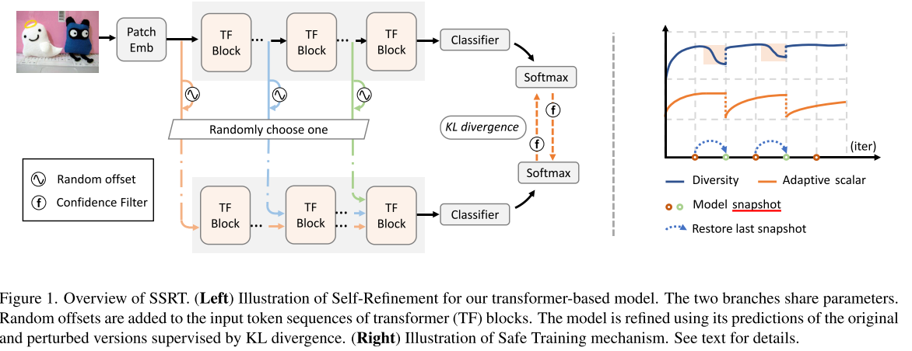

论文链接： https://arxiv.org/abs/2204.07683 代码链接： https://github.com/tsun/SSRT
贡献
方法名：SSRT
Transformer backbone
safe trainging strategy, 简单而言，做了模型快照
在大数据集上，特别是DomainNet上提升明显，SOTA 45.2%
模型方法

损失函数
$$\mathop {\min }\limits_{f, { {\cal G} } } \mathop { \max }\limits_d { {\cal L} } = { {\cal L} }{ { }_{CE} } - { { {\cal L} }_d} {} + \beta { { {\cal L} }_{tgt} } \tag{1}$$
$\mathop {\min }\limits_{f,{ {\cal G}}} \mathop {\max }\limits_d { {\cal L} } = { {\cal L} } { { }_{CE} } - { { {\cal L} }_d} {} + \beta { { {\cal L} }_{tgt} }$
在transformer的结构中，对一个target domain image $x$, $b_x^l$ 表示transformer第$l$个block的，本文代码使用了12block, depth=12, 每个block 包含12heads。
we utilize the token sequence $b_{xr}^l$ of another randomly chosen target domain image $x_r$ to add an offset. The perturbed token sequence of ${b_x^l}$ is obtained as
$$\tilde b_x^l = b_x^l + \alpha {[b_{xr}^l - b_x^l]_ \times } \tag{2}$$
1 | def forward_features(self, x): |
本文遇到问题：
公式显示problem
marked.cjs 文件修改
- \blog\node_modules\marked\lib\marked.cjs
- escape:处替换成：有多处，只需要替换和以下格式比较像的部分，下同
escape: /^\\\([`*[]()#$+\-.!_>])/, - em: 处替换成：
em: /^\*((?:\* \*|[\s\S])+?)\*(?!\*)/,
同时需要在 theme\_config.yml 文件中将 mathjax设置为true
markdown文章文件也要将文章头 中的 mathjax 设置为true
md文件公式修改
即使上述修改完后，md文件的公式到网页端可能还是会渲染出现问题，不过无非就是以下两个问题
问题1
- \\\\; \quad 的渲染会出现问题 ，很容易将\\\\ 识别成 \ ，\; 识别成 ; 渲染失败，如果公式渲染失败，可以在公式中寻找这些位置添加 \
问题 2
- 两个{ { } } 之间要加 空格加以区分
图片显示problem
- 进入你博客的根目录，然后下面顺序找到index.js:
- node_modules –> hexo-asset-image –> index.js
- 用VS Code 或者 记事本打开 index.js
- 在第 58 行，可以找到这么一行代码：
- $(this).attr(‘src’, config.root + link + src);
- 把这一行代码改成下面这样
- $(this).attr(‘src’, src);
- 保存文件